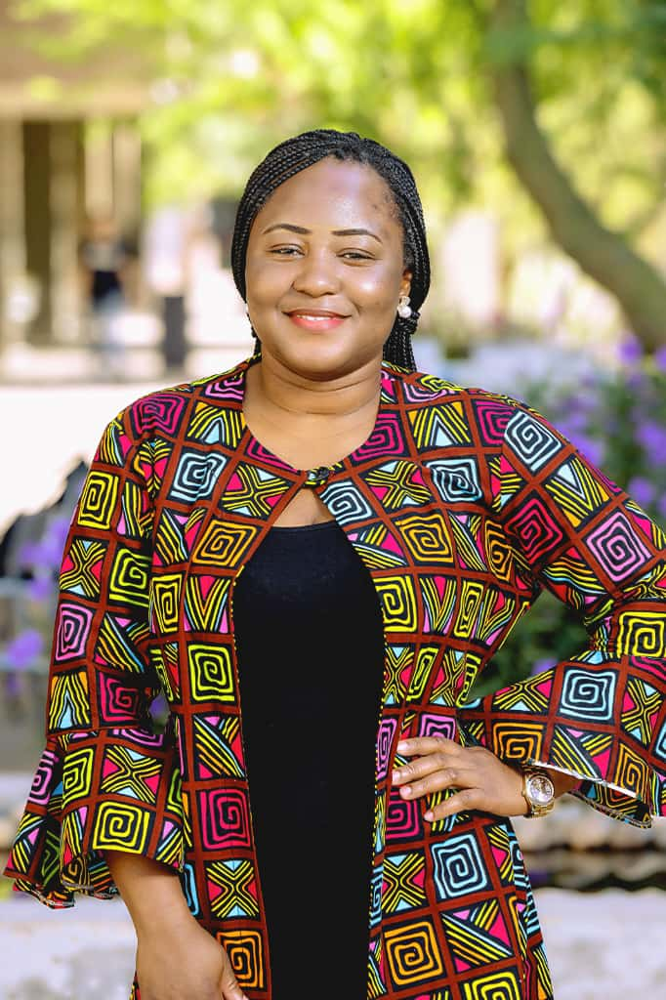

Provides leadership, oversees operations, and drives corporate strategy across all NSC engagements.

GJA Female Journalist of the Year 2025. Leads documentary, broadcast content, and high-level events documentation with award-winning precision.
GJA Best in Feature Reporting 2025. Oversees narrative reports and research-based documentation with depth and clarity.
Leads communication planning and major rapporteuring coordination, bringing strategic insight and public affairs expertise.
Leads the organization with diplomatic reporting and strategic communication input for high-level institutional engagements.
Handles event reporting, live coverage, and structured communication outputs across corporate and institutional engagements.
Specializes in editorial writing and formal documentation, producing structured outputs that reflect institutional excellence.
Interested in working with NSC?
Our team brings together award-winning journalism, strategic communications, and professional documentation expertise to every engagement.